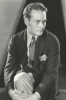

Country:United States,
Spoken languages:
Genres:Action, Adventure
Director(s):Robert F. Hill
Writer(s):Basil Dickey, George H. Plympton
Video Codec:Unknown
Number: 1618


Certification:
Storyline:
Mary Brooks' father, who has been studying ancient tribes, falls into the hands of "the people of Zar, god of the Emerald Fingers." Tarzan helps Mary locate her father, rescues everyone from the High Priest of Zar, and takes Mary to his cave.
Cast: 


Medium: Original DVD,
Comments: Part of: Wrath of the Sword - 20 movie collection
Loaned: No
Aspect ratio: Unknown